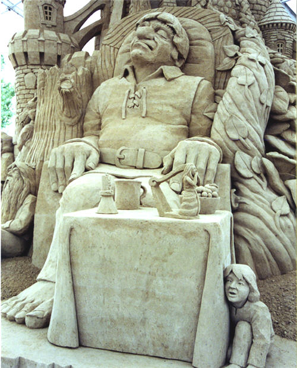

Arte efímero en la arena
Les presento una muestra del trabajo de siete artistas, obras hechas con arena, agua, tiempo y mucho talento.
1.- Helena Bangert: Escultora profesional holandesa en hielo y arena.
2.- Michael Lepire Inc: Escultores profesionales de nacionalidad francesa, Michael y Marc Lepire.
3.-Amazing Walter: Escultor, joyero, payaso, músico y fotógrafo (al parecer vive en Texas).
4.- Kingsand: Portafolio del trabajo de 3 escultores: Dan Glover, Martijn Rijerse, y Jeroen Meijer.
5.- Dan Belcher: Escultor en arena profesional de nacionalidad estadounidense.

6.- Jim Denevan: Dibujar en la arena, sería una forma de llamar a lo que hace este artista. Crea figuras geométricas a la orilla del mar.
7.- Radovan Zivny: Pintor y escultor profesional de nacionalidad checa.
Construcciones efímeras en su mayoría, que por asociación me recuerdan de las cosas hermosas y fugaces que existen alrededor nuestro.
Hay una compilación de estos y otros artistas que trabajan con arena en este enlace.
Metadatos y acciones
 Temas: arte, imagenes ⋅
Para guardar: Enlace permanente a esta anotación.
Temas: arte, imagenes ⋅
Para guardar: Enlace permanente a esta anotación.
 Print This Post
Print This Post
Comentarios
Los comentarios están cerrados.
Categorías
Últimas 4 anotaciones
Últimas anotaciones en cada categoría

Divulgación
El dinero no fomenta la creatividad: Daniel Pink en TEDGlobal 2009

Inspiración
Los 30 no son los nuevos 20

Noticias
Ver tu mente en tiempo real: Christopher deCharms en TED 2008
![Música en la era digital [Animación]](../../../wp-content/themes/tma/images/featured/animation_04_2009_featured.jpg)
Ocio
Música en la era digital [Animación]
septiembre 26, 2010, 10:20 pm
hola como estas
septiembre 26, 2010, 10:25 pm
me llamo rosa margarita rojo gomez tengo 15 años estudio en tijuana b.c muchos saludos a todos mis amigos de la secundaria general#89 a diana ,bere, vannesa, cecilia, miriam,edwan alberto, cruz, alejandro,daniel LOS KIERO MUCHOS PLEBES BESOOSSS A ABRASOS ATTENTAMENTE YO MARGARITA Y TROS DE MIS AMIGAS QUE TAMBIEN KIERO MUCHOOO Y QUE YA NO ESTAN SON PERLA JUDITH CORRAL TRINADO Y JESSICA VIANEY PEREZ GILLEN VAYYY FOR EVER.